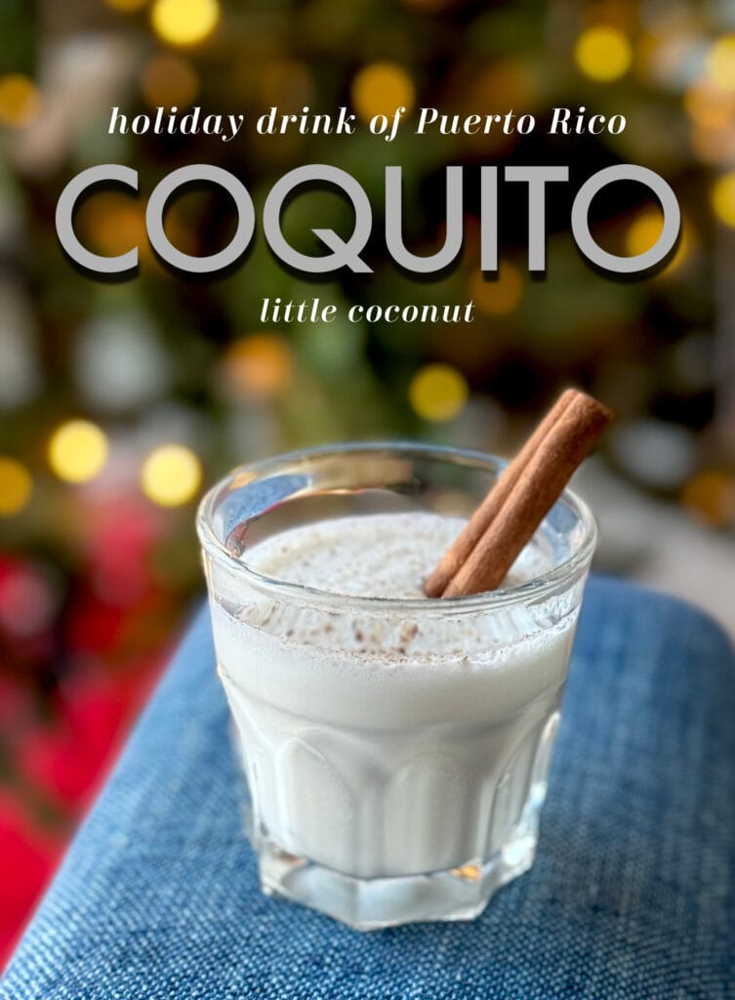

Coquito is a popular Christmas coconut rum nog traditionally served in Puerto Rico.
This is my egg-free recipe which has an ice cream twist.
Sprinkle with ground cinnamon or nutmeg and serve.

Ingredients
(15 ounce) can cream of coconut
1 (14 ounce) can sweetened condensed milk
1 (12 ounce) can evaporated milk
1 cup coconut-flavored rum (such as Bacardi®)
¼ cup water
1 scoop vanilla bean ice cream
1 teaspoon vanilla extract
2 cinnamon sticks
2 whole cloves
1 pinch ground cinnamon
1 pinch ground nutmeg
Directions
Place cream of coconut, condensed milk, evaporated milk, coconut rum, water, ice cream, and vanilla extract in a blender. Blend until smooth and well-combined, about 3 minutes
Pour coconut mixture into two 20-ounce glass bottles or jars. Add 1 cinnamon stick and 1 clove to each container; shake well. Chill coquito 8 hours to overnight.
Shake container before pouring coquito into shot glasses or small cups. Sprinkle cinnamon or nutmeg on top before serving.